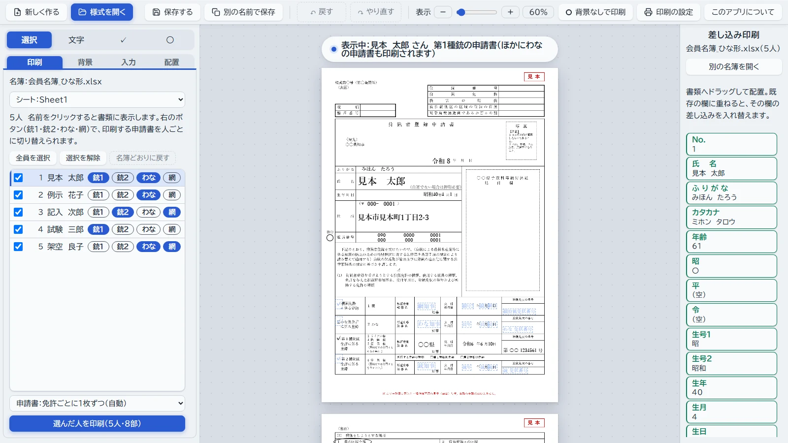
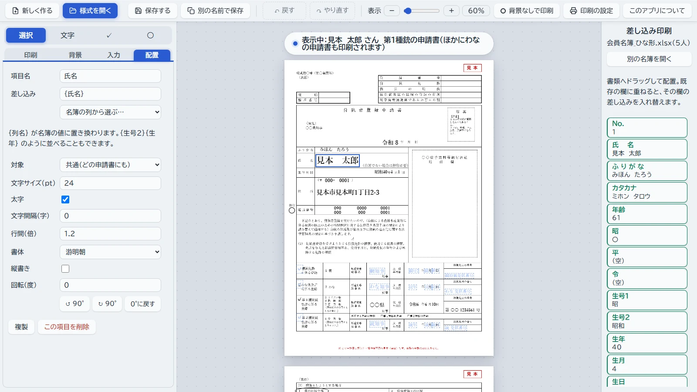
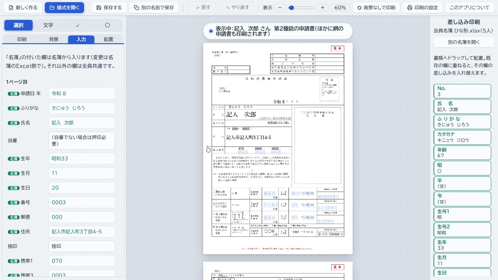

書類印刷（汎用版）
狩猟者登録申請書などの書類（PDF・画像）に、会員名簿（Excel）の氏名や住所を差し込んで、まとめて印刷できる無料のアプリです。インストール不要。名簿や書類はパソコンの中だけで扱い、インターネットへ送ることはありません。
「ブラウザで試す」でも、名簿や書類はお使いのパソコンの中だけで扱われます。ふだん使うときは、ダウンロードしてパソコンに置くのがおすすめです。

紹介動画（1分40秒）
くわしい操作は 操作説明動画（約7分） と 使い方 をご覧ください。
できること
- 狩猟者登録申請書を、免許ごと（第1種銃・第2種銃・わな・網）に自動で振り分けて印刷
- 保険の申込書・報告書など、ほかの書類も名簿から 1 人 1 枚で印刷
- 役所でもらった用紙への「文字だけ印刷」にも対応（位置の微調整つき）
- 手元の書類の PDF やスキャン画像から、自分で様式を作れる
使い始め方
- 「ダウンロード（zip）」を押して保存し、右クリック →「すべて展開」で展開します。
書類印刷.htmlをダブルクリックし、Microsoft Edge か Google Chrome で開きます。- 「様式を開く」で
見本フォルダの狩猟者登録申請書_見本_様式.jsonを、名簿は会員名簿_ひな形.xlsxを選ぶと、架空のデータで試せます。
lib フォルダはアプリの部品です。書類印刷.html と同じ場所に置いたままにしてください。
画面のようす


入っているもの
- アプリ本体（
書類印刷.html）と、見た目を飾らない版（書類印刷_シンプル版.html） - 使い方の説明（
使い方.html） - 会員名簿のひな形（Microsoft 365 / Excel 2021 以降用と、Excel 2019 以前用。架空の記入例入り）
- 練習用の架空の申請書（狩猟者登録申請書・狩猟免許更新申請書）と、その様式
まわりの方にも紹介してください
会議や講習会などで配れる、A4 1枚のチラシ（QR コード付き）を用意しました。
ご注意
- 個人が作った非公式のアプリです。行政や狩猟団体の公式のものではありません。
- 申請書の様式は都道府県や年度で変わります。印刷した書類は、提出前に必ず内容を確かめてください。
- このアプリを使ったことで生じた損害について、作成者は責任を負いかねます。
寄付について（任意）
すべての機能を無料で使えます。役に立ったと感じていただけたら、開発の応援をいただけると励みになります。
Stripe（決済サービス）の支払いページが開きます。金額は自由に選べ、アカウントの登録は要りません。